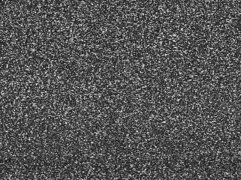
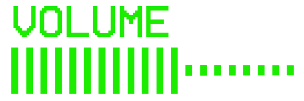

{{#extend "layout"}}
{{#content "main"}}

<h1 class="Logo u-overlay">
	
</h1>

</div>

<div id="YoutubePlayer" class="YoutubePlayer u-stretch"></div>

<div class="SoundCloudPlayer">
	<iframe width="100%" height="450" scrolling="no" frameborder="no" src="https://w.soundcloud.com/player/?url=https%3A//api.soundcloud.com/playlists/15708529%3Fsecret_token%3Ds-ZTZB3&amp;auto_play=false&amp;hide_related=false&amp;show_comments=true&amp;show_user=true&amp;show_reposts=false&amp;visual=true"></iframe>
	<!-- <iframe width="100%" height="450" scrolling="no" frameborder="no" src="https://w.soundcloud.com/player/?url=https%3A//api.soundcloud.com/playlists/282899748&amp;auto_play=false&amp;hide_related=false&amp;show_comments=false&amp;show_user=true&amp;show_reposts=false"></iframe> -->
</div>

<div class="Notify u-overlay">
	
</div>

<div class="Alert u-overlay"></div>

<marquee class="NewsTicker u-overlay" scrollamount="20">
	{{> track-list}}
</marquee>

<div class="RemoteControl" draggable="true">
	<ul class="RemoteControl-list">
		<li><button class="js-volUp">Up</button></li>
		<li><button class="js-powerButton">Off</button></li>
		<li><button class="js-prev">Prev</button></li>
		<li><button class="js-volDown">Down</button></li>
		<li><button class="js-toggleSound">Mute</button></li>
		<li><button class="js-next">Next</button></li>
		<li><button class="js-changeTrack">1</button></li>
		<li><button class="js-changeTrack">2</button></li>
		<li><button class="js-changeTrack">3</button></li>
		<li><button class="js-changeTrack">4</button></li>
		<li><button class="js-changeTrack">5</button></li>
		<li><button class="js-changeTrack">6</button></li>
		<li><button class="js-changeTrack">7</button></li>
		<li><button class="js-changeTrack">8</button></li>
		<li><button class="js-changeTrack">9</button></li>
		<li><button class="js-changeTrack">10</button></li>
		<li class="RemoteControl-orderBtn">
			<a href="http://tartelet-records.com/releases/freedom-tv" target="_blank"></a>
		</li>
	</ul>
	<footer class="RemoteControl-footer">
		<a href="https://www.facebook.com/WayneSnowOfficial" target="_blank">Facebook</a><br>
		<a href="https://soundcloud.com/tartelet-records" target="_blank">Soundcloud</a>
	</footer>
</div>

{{/content}}
{{/extend}}
